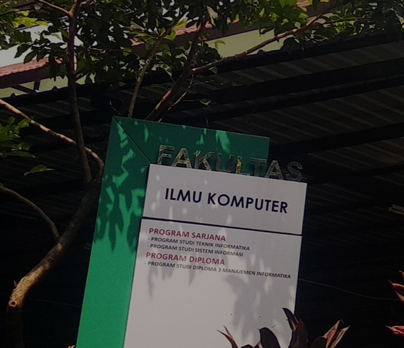

Selamat Datang pada Sistem Peminatan Keahlian Fakultas Ilmu Komputer UPN "Veteran" Jakarta
Sistem ini untuk sebagai tolak ukur pemahaman diri saya terhadap materi pemrograman web sistem informasi

Sistem ini untuk sebagai tolak ukur pemahaman diri saya terhadap materi pemrograman web sistem informasi
Mahasiswa Sistem Informasi Ilmu Komputer
| Nama | : Deni Permana |
| NIM | : 2210512015 |
| Program Studi | : Sistem Informasi |
" Semoga Sistem ini berguna " ~ Denayy